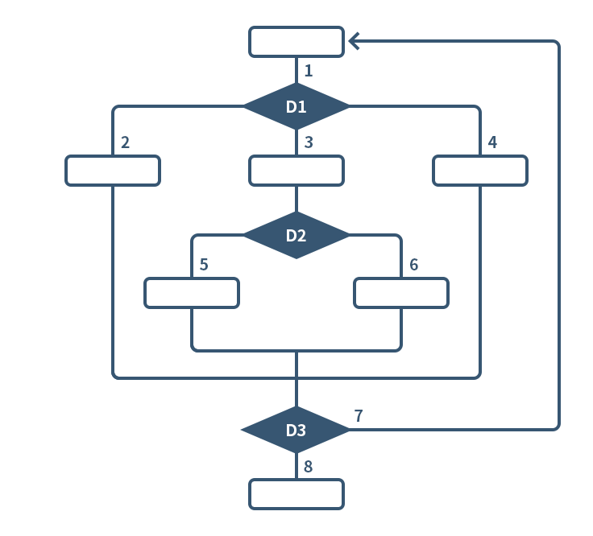

(현장) 승인 테스트는 소프트웨어를 전개 전의 최종 테스트이다.
승인 테스트 목적은 소프트웨어가 준비되고, 최종 사용자가 설계했던 대로 기능과 업무를 수행하는데 사용할 수 있는지 확인하는 것이다.
또한 승인 테스트는 준비된 S/W뿐 아니라 고객에게 전달될 모든 제품 산출물을 포함할 수 있다.
SW 산출물에서 승인 테스트를 위한 Test Case 도출은 본 가이드에서 기술된 방식을 기반으로 이루어진다.
또한, 승인 테스트 절차와 정도에 따라 달라질 수 있으나 일반적으로는 사용되는 Test Case는 다음과 같다.
- 이전 테스트 단계에서 도출된 동일 Test Case 활용
- 유사하거나 또는 부분적인 Test Case 활용
그러나 Test Case정도와는 무관하게 사용될 Test Case및 승인 계획에 대한 합의가 승인 테스트 구현 및 수행 이전에 완료되어야 한다.
비SW 산출물을 평가하는 것은 평가될 산출물 유형 및 종류에 따라 매우 가변적이다.
회귀 테스트는 동일한 테스트 대상의 여러 (기존/신규)버전을 비교하여 잠재적 결함을 식별하는 것이다.
따라서 이것은 새로운 버전이 이전 버전과 같이 동작한다는 것을 가정하고 있으며 변화의 결과로 결함이 생기지 않았다는 것을 확인하는 것이다.
이상적으로 한 Iteration에서 사용된 모든 Test Case는 이후 Iteration의 Test Case로 이용될 수 있다.
Test Case 유지보수는 최소화하면서 재사용과 회귀 테스트의 효용성을 최대화 하도록 식별, 설계 구현하는데 있어 다음과 같은 지침을 사용할 수 있다.
- 핵심 데이터 요소만을 식별하는 Test Case확인
- 테스트 대상에서 유일한 동작을 발생시키는 이벤트 흐름이나 유일한 입력 값으로 이루어진 각 Test Case 확인
- 동일하거나 중복된 Test Case 제거
- 테스트 대상의 동일한 초기 상태를 가지거나 테스트 데이터의 동일 상태를 가지는 Test Case를 그룹화
테스트 기법은 크게 Black-Box 테스트와 White-Box 테스트로 구분된다.
Black-Box 테스트 기법은 데이터 기반 혹은 입출력 기반 테스트 라고도 하며 테스터가 프로그램의 구조나 내부가 어떠한지 관심을 갖지 않고 오로지 프로그램의 입력과 결과값에만
관심을 갖는다.
테스트 데이터는 여러 시스템 명세서를 참고로 하여 도출된다.
White-Box 테스트는 로직 기반 테스트라고도 하며 프로그램의 내부 구조를 검증하는 테스트 방식이다.
대표적인 화이트박스 기법으로는 Control-Flow 테스트가 있다.
블랙박스 테스트 기법과 화이트박스 기법은 각각 장단점을 가지고 있으므로 전적으로 한가지 방법으로 테스트를 수행하기 보다는 필요시 두개를 함께 사용하여 서로 보완할 수 있다.
제어 흐름 테스트 (Control flow test)
제어 흐름 테스트는 프로그램 구조를 테스트하는 것으로 단위 테스트나 결합(통합) 테스트를 수행하기 위해 사용되는 공식적인 White-Box 테스트 설계 기법이다.
다른 기법과 유사하게 제어 흐름 테스트도 테스트 깊이 레벨(Test Level Depth) 1, 테스트 깊이 레벨 2, ••••, 테스트 깊이 레벨 n과 같이 테스트 강도가 존재하며
테스트 케이스를 선택된
흐름을 따라 연속적인 구문의 집합으로 기술할 수 있다.
테스트 깊이 n의 경우 둘 또는 그 이상의 연속적인 구문을 실행할 때, 어떤 한 구문에 영향을 미치는 전/후 구문을 모두 고려한 것으로 리스크가 매우 높거나 매우 복잡한
기능에 대해서만
적용한다.
테스트 대상의 모든 부분을 깊은 테스트 레벨로 테스트하면 좋지만, 테스트 깊이가 깊을수록 커버리지는 높아지는 반면 비용, 시간, 리소스 등이 많이 소요된다.
제어 흐름 테스트 예
다음 제어 흐름도를 보고 테스트 케이스를 도출할 때 생각할 수 있는 테스트 커버리지는 아래의 3가지 종류이다.
- 모든 흐름을 최소 한 번씩은 지나가는 테스트
- 흐름의 조합을 모두 지나가는 테스트(각 결정 포인트에서)
- 반복적인 흐름을 포함하는 모든 경우의 흐름을 고려한 테스트

첫 번째 조건을 만족하는 테스트 케이스는 다음과 같다. 여기서 다른 테스트 케이스를 생각할 수 있지만 최종적으로 보장하는 범위는 동일하다.
- TC1 : (1,2,8,3,5,7)
- TC2 : (1,3,6,8,4,7)
(1,2,8,3,5,7) 등은 논리적인 테스트 케이스(Logical test cases)이다.
이를 구체적인 테스트 케이스(Physical test cases)로 변경하는 것은 각 경로(흐름)로 수행되도록 구체적인 값을 선택, 기술하는 것이다.
위 2개의 테스트 케이스의 보장 수준은 상대적으로 낮으나 “모든 흐름을 최소 한 번씩은 지나가는 테스트” 커버리지를 만족한다.
특정 코드가 현재 개발 중인 또는 개발된 소프트웨어 또는 시스템에서 중요하지 않고, 장애가 발생할 가능성도 높지 않으며, 해당 부분이 잘못되었을 경우에 미치는 영향도 크지 않을
경우, “모든 흐름을 최소 한 번씩은 지나가는 테스트” 커버리지 정도의 테스트로 충분할 수 있다.
시간과 리소스가 부족한 상황에서는 더 높은 레벨의 커버리지를 갖는 테스트를 할 수도 없고 그럴 필요성도 없을 수 있다.
더 높은 레벨의 테스트 커버리지를 갖는 테스트 케이스, 즉 결정 포인트에서 흐름의 조합을 모두 지나가는 테스트 케이스는 아래의 절차대로 도출할 수 있다.
이때 누락하는 것 없이 모든 케이스를 도출하여야 해당 레벨까지의 커버리지를 보장할 수 있다.
위의 제어 흐름도에서 결정 포인트를 중심으로 들어오는 흐름(Inflow)과 나가는 흐름(Outflow)의 조합을 모두 고려하여 테스트 케이스가 도출되면 좀 더 보장성이 높고 상세하고
강력하게 테스트할 수 있게 된다.
결정 포인트 D1, D2, D3로 들어가는 흐름과 나오는 흐름을 표로 그린 후 조합을 구해보면 아래 표와 같다.
| |
Inflow |
Outflow |
Combinations |
| D1 |
1,8 |
2,3,4 |
(1,2) (1,3) (1,4) (8,2) (8,3) (8,4) |
| D2 |
3 |
5,6 |
(3,5) (3,6) |
| D3 |
2,5,6,4 |
7,8 |
(2,7) (5,7) (6,7) (4,7) (2,6) (5,8) (6,8) (4,8) |
여기서 위의 모든 흐름을 최소 한 번씩은 지나가는 (Depth level 1) 테스트 케이스 2개가 커버하는 조합을 지운다.
- TC1 : (1,2,8,3,5,7) => (1,2) (2,8) (8,3) (3,5) (5,7)
- TC2 : (1,3,6,8,4,7) => (1,3) (3,6) (6,8) (8,4) (4,7)
이 때 지워지지 않고 남아 있는 것들이 더 높은 레벨 (Depth level 2)을 보장하기 위해 필요한 테스트 케이스를 이룬다.
남아 있는 부분 조합을 모두 지나가는 테스트 케이스를 제어 흐름도를 보면서 작성해 보면 아래와 같다.
- TC3 : (1,4,8,2,7) => (1,4) (4,8) (8,2) (2,7)
- TC4 : (1,3,5,8,3,6,7) => (5,8) (6,7)
위에서 도출된 TC1, TC2, TC3, TC4가 결국 “테스트 깊이 레벨 2(Depth level 2)”를 갖는 테스트 케이스가 된다.
이 테스트 케이스로 테스트를 실행하여 결함이 없으면 해당 테스트 대상 부분은 제어 흐름 테스트 기법(테스트 깊이 레벨 2까지)이 보장하는 범위에서는 결함이 없는 테스트를 실행하였음을
보장받게 된다.
즉, 공식적인 기법이 보장하는 범위까지 테스트를 수행했다는 것을 확신할 수 있게 된다.
회귀 테스트는 동일한 테스트 대상의 여러 (기존/신규)버전을 비교하여 잠재적 결함을 식별하는 것이다.
따라서 이것은 새로운 버전이 이전 버전과 같이 동작한다는 것을 가정하고 있으며 변화의 결과로 결함이 생기지 않았다는 것을 확인하는 것이다.
이상적으로 한 Iteration에서 사용된 모든 Test Case는 이후 Iteration의 Test Case로 이용될 수 있다.
Test Case 유지보수는 최소화하면서 재사용과 회귀 테스트의 효용성을 최대화 하도록 식별, 설계 구현하는데 있어 다음과 같은 지침을 사용할 수 있다.
- 핵심 데이터 요소만을 식별하는 Test Case확인
- 테스트 대상에서 유일한 동작을 발생시키는 이벤트 흐름이나 유일한 입력 값으로 이루어진 각 Test Case 확인
- 동일하거나 중복된 Test Case 제거
- 테스트 대상의 동일한 초기 상태를 가지거나 테스트 데이터의 동일 상태를 가지는 Test Case를 그룹화
단위, 통합, 시스템 테스트의 표준 테스트 케이스(점검항목)이다.
표준 테스트 케이스는 많은 프로젝트를 통해 경험한 보편적인 상황을 기반으로 한 것이다.
표준 테스트 케이스는 개발프로젝트에서 테스트 케이스 작성 시 테일러링하여 활용할 수 있으며, 효과적인 테스트 커버리지를 보장하고 배포 후 시스템에서 발견되는
결함을 줄이는데 그 목적이 있다.
또한 제3자 관점에서의 테스트 수행 시 테스트 케이스를 설계하지 않고 테스트를 수행하는데 이러한 표준 테스트 케이스를 활용할 수 있다.
테스트 케이스 설계 없이 테스트를 수행하는 경우에도 테스트 점검항목을 활용해야 하는 이유는 참여하는 제3자 테스터의 스킬이 낮거나 편차로 따른 테스트 결과 품질
저하 방지와 사전에 많은 잠재 결함을 검출함으로써 품질개선에 기여하고자 함이다.
테스트 케이스 설계 없이 테스트 수행하는데 있어 다음과 같은 점검항목을 참여 테스터가 사전에 숙지하는 것이 매우 중요하다.
또한 테스트 케이스 설계의 보조적인 수단으로 활용되어질수 있다.
| 테스트 단계 |
테스트 유형 |
표준 테스트 케이스 |
| 단위 테스트 |
사용자 I/F |
어플리케이션의 GUI가 개발 프로세스 또는 설계에서 제시된 표준을 준수하는지 확인 |
필드 유효성
– 문자 필드 |
입력 필드에 오버플로우를 야기하기 위해 필드 크기를 초과하는 데이터를 입력 |
| 입력 필드 모두에 스페이스를 입력 |
| 필드를 null 값으로 둔다. |
| 첫번째 위치만 값을 입력, 나머지는 공란으로 둔다. |
| 첫번째 위치는 공란으로 남겨두고, 나머지는 데이터를 입력 |
| 마지막 위치에 데이터를 입력하고, 나머지는 공란으로 둔다. |
| 마지막 위치는 공란으로 남겨두고, 나머지는 데이터를 입력 |
| 첫번째, 마지막, 중간 위치에 특수 문자를 입력 |
| 필드에 특수 문자를 입력(디스플레이 여부) |
| 데이터 필드 중간에 공란을 입력 |
| 문자와 숫자를 혼합하여 입력 |
| 숫자로 구성된 데이터를 입력 |
필드 유효성
- 숫자 필드 |
모두 ‘9’로 구성된 숫자를 입력 |
| 모두 ‘0’으로 구성된 숫자를 입력 |
| 모두 공란으로 비워둔다. |
| 상하한 값을 입력 |
| 상하한 범위 밖의 값을 입력 |
| 중간값을 입력 |
| 필드의 시작,중간,끝에 ‘+/-‘ 기호를 입력 |
| 숫자와 문자를 혼합하여 입력 |
| 필드에 특수 문자를 입력(디스플레이 여부) |
| 첫번째 위치만 값을 입력, 나머지는 공란으로 둔다. |
| 첫번째 위치는 공란으로 남겨두고, 나머지는 숫자를 입력 |
| 마지막 위치에 데이터를 입력, 나머지는 공란으로 둔다. |
| 마지막 위치는 공란으로 남겨두고, 나머지는 숫자를 입력 |
| 숫자만 입력 |
| 음수를 입력 |
| 2개의 부호를 함께 입력. (++, --, +-, -+) |
| 중간에 공란을 입력 |
| scientific notation 형식으로 숫자를 입력 |
| 에러 메시지
|
적절하고 문법상 정확한 에러 메시지가 출력되는지 확인 |
| 에러 메시지를 출력하기 위해 프로그램에 부적합한 값을 입력 |
| 하나의 트랜잭션에 여러 개의 에러를 입력 |
| 여러 개의 스크린이 동작하는 트랜젝션에 대해, 트랜젝션이 완료되기 전에 중단 시도 |
| 필수 입력 필드를 채우지 않고 트랜잭션 시도 |
| 선택 입력 필드를 채우지 않고 트랜잭션 시도 |
| 커서 확인
|
읽기 전용 필드에 커서가 멈추지 않는다. |
| 커서를 이용해 스크린을 넘길 수 있는지 확인 |
| 에러 메시지 출력 후 커서가 정확한 입력 필드에 머무는지 확인 |
| 날짜/시간 필드
확인
|
입력 필드에 음수 날짜 값을 입력 |
| 정상 데이터보다 큰 값을 입력(달, 일, 부적합한 년도). |
| 적합한 년과 월, 부적합한 일을 입력 |
| 동일한 값의 다양한 형태를 입력(19 Aug 90,1990–08-19,19-08-90, 19/08/90) |
| 공란을 섞어서 날짜를 입력 (예, 19 Aug 90; 19 Aug; 19Aug90) |
| 날짜 입력 형태에 대한 정보가 나타나는지 확인 |
| 일, 월, 년도 필드를 비우고 날짜를 입력 |
| 모든 날짜 필드에 999를 입력 |
| 모든 날짜 필드에 000을 입력 |
| 특수 문자를 섞어서 입력 |
| 19, 20, 21 세기 날짜를 입력 |
| 범위를 벗어나는 날짜를 입력 |
| 윤년에 해당하는 날짜를 입력 |
| 필요 시 테스트와 관련된 시간대를 선택 |
| 사용될 날짜와 시간 종류: 중앙 컴퓨터 시간 또는 로컬 시간?자정기준: 중앙 컴퓨터 시간 또는 로컬 시간? |
| 보고 테스트
|
결과물의 디스플레이와 출력이 제대로 되는지 확인
(요구사항에 따른 좌우 맞춤)
|
| 모든 세부 라인에 음수를 입력 |
| 동시에 세부 라인에 최대/최소 값을 입력
(필드가 오버랩핑 되는지 확인한다)
|
| 모두 ‘0’으로 구성된 숫자를 입력(0이 삭제되는지 확인한다). |
| 보고서의 제목과 하위제목을 확인 |
| 머리글, 보고서 종료 표시, 페이지 번호를 확인 |
| 데이터가 없는 보고서를 테스트 |
| 보고서의 모든 절과 소계를 확인 |
| 단페이지(one page) 보고서의 페이지 번호와 보고서 종료 표시를 테스트 |
| 단페이지 보고서의 필수 필드와 선택 필드를 확인 |
| 정의된 인쇄 양식에 따라 보고서가 출력되는지 확인 |
| 보고서 로그가 제대로 출력되는지 확인 |
| 모든 세부 항목들이 초기 화면과 다음 화면에 일관되게 나타나는지 확인 |
| 프린터가 연결되지 않은 상태에서 보고서 출력을 시도 |
| 값의 절사/올림이 수행되는지 확인 |
| 데이터 입력 스크린에서의 에러가 강조되는지 확인 |
| 보고서 미리보기 기능이 수행되는지 확인 |
| 검색 |
데이터베이스의 첫번째와 마지막 레코드가 검색되는지 확인 |
| 존재하지 않은 레코드를 검색 |
| 삭제된 레코드를 검색 |
| 동시에 추가된 레코드를 검색 |
| 동시에 삭제된 레코드를 검색 |
| 동시에 변경된 레코드를 검색 |
| 동시에 복원된 레코드를 검색 |
| 조회 도중 중단 |
| 검색 조건 없이 검색을 시도 |
| 모든 필수 조회 필드를 채우지 않고 검색을 시도 |
| 다른 레코드와 동일한 키값을 가지고 있는 레코드를 검색
(키값 반복이 가능하다고 가정)
|
| 키값이 아닌 데이터를 이용해 검색 |
| 가능한 데이터 입력 조합에 대해 검색을 수행 |
| 프로세스 로직
확인
|
음수를 포함하여 low, medium, high 퍼센트의 평균 계산 시도 |
| 0으로 분모로 하여 나눗셈 시도 |
| 최대/최소값을 사용하여 연산 시도 |
| 최소값보다 작은 값, 최대값보다 큰 값을 사용하여 연산 시도 |
| 승수를 0으로 하여 곱셉 시도 |
| 오버플로우(over-flows)와 언더플로우(under-flows)를 야기하는 값으로 연산 시도 |
| 올림을 야기하는 값으로 연산 시도 |
| 절사를 일으키는 값으로 연산 시도 |
| 디스플레이 하기에 너무 작거나 큰 값으로 연산 시도 |
| 지수 표기법을 사용한 값으로 연산 시도 |
| 데이터베이스, 파일,
테이블 갱신
|
빈 테이블에 새 레코드를 추가 |
| 첫번째 레코드 삽입 직후 바로 새로운 레코드를 추가 |
| 중복 레코드를 추가 |
| 삭제된 레코드를 추가 |
| 레코드 추가되는 도중에 작업을 중단 |
| 연속적으로 복수 레코드를 추가 |
| 필수 데이터와 선택 데이터를 제외한 레코드를 추가 |
| 기본키(primary key)가 숫자, 0, 9로 이루어진 레코드를 추가 |
| 기존 레코드를 추가 |
| 외래키(foreign key)/기본키(primary key)를 추가 |
| 키 값이 범위를 벗어난 레코드를 추가 |
| 여러 개의 물리적 데이터베이스로 구성된 논리 데이터베이스에 대해 물리적 데이터베이스가 정확하게 갱신되는지 확인 |
| 데이터베이스 레코드
변경
|
키 필드에 들어있는 기존 값을 변경 |
| 기존 데이터베이스의 키값과 매치되는 레코드를 변경(추가/삭제)한다. |
| 물리적 데이터베이스에서 레코드 삭제 또는 추가를 해야만 하는 레코드 키값을 변경 |
| 키값 이외의 필드의 기본 레코드를 변경 |
| 삭제된 레코드에 대한 변경을 시도 |
| 동시에 연속/비연속적으로 하나의 레코드에 여러 개의 변경을 시도한 |
| 동시에 레코드를 추가하고 변경 |
| 레코드가 변경되는 동안 작업을 중단 |
| 동시에 레코드의 수정과 삭제 작업을 수행 |
| 동시에 복수 레코드를 변경 |
| 필드의 기본값이 정확하게 설정되어 있는지 확인 |
| 데이터베이스의 기본값을 공란으로 변경 |
| 데드락과 잠금 기능을 확인 |
| 테이블/파일로부터
레코드 삭제
|
기존 레코드를 삭제 |
| 첫번째와 마지막 레코드를 삭제 |
| 두번째, 끝에서 두번째, 중간 레코드를 삭제 |
| 존재하지 않는 레코드를 삭제 |
| 삭제된 레코드를 삭제 |
| 삭제된 레코드를 복원/재저장 |
| 복원 후, 레코드를 다시 삭제 |
| 변경된 레코드를 삭제 |
| 동시에 레코드를 변경하고 삭제 |
| 삭제 도중 취소 시도 |
| 논리적으로 유지 혹은 다른 데이터베이스 레코드와 연결되는 레코드에 대해 모든 종속 레코드와 외래키/기본키가 삭제되는지 확인한다. |
| 순차적으로 처리되는 레코드를 삭제 |
| 삭제 시 데드락 조건을 확인 |
| 중복이 가능할 경우, 다른 레코드와 키를 공휴하고 있는 레코드를 삭제 |
| 모든 레코드를 삭제 |
| 락이 되어 있는 레코드에 대해 어플리케이션의 다른 터미널/인스턴스에서 다시 락이 걸리는지 확인 |
| 통합 테스트 |
데이터 흐름 |
하나의 모듈에서 다른 모듈로의 데이터 흐름을 확인 |
| 데이터 무결성 체크 |
모듈에서 사용되고 공유되는 마스터 데이터의 무결성 확인 |
| 에러 메시지
|
다양한 조건에 따라 의미적/문법적으로 정확한 에러 메시지가 출력되는지 확인 |
| 예외 처리가 되고 적합한 에러 메시지가 출력되는지 확인 |
| 시스템 테스트 |
보안 |
시스템 침입 가능성을 확인 |
| 시스템의 민감한 부분에 대한 엄격한 접근 제한이 되고 있는지 확인. |
| 기능 확인
|
기능이 적합하게 구현되었는지 확인 |
| 요구사항에 따라 어플리케이션의 모든 기능이 작동하는지 확인 |
| 브라우저 호환성 확인 |
요구사항에 명시된 각 브라우저 버전에서 작동하는지 확인 |
| 부하 테스트 |
부하 테스트
|
최대 사용자가 시스템에 접근했을 경우 특정 기능에 대해 응답 시간이 명시된 시간에 부합하는지 확인 |
| 시스템 최대 사용자 수를 만족하는지 확인 |
| 하드웨어 구성 조합이 시스템 최대 사용자 수를 만족하는지 확인 |
| 스트레스 테스트 |
스트레스 테스트 |
최소 시스템 자원에서 시스템을 실행한
시스템이 응답하지 않는 시간을 확인
|
| 사용성 테스트 |
사용성 확인
|
사용자가 쉽게 이해할 수 있는 명령으로 이루어져있는지 확인 |
| 사용자 매뉴얼이 시스템 모든 기능을 포함하고 있는지 확인 |
| 최소 클릭으로 메뉴나 다른 기능에 대한 네비게이션을 할 수 있는지 확인
|
| 설치 매뉴얼에 설치를 위해 필요한 모든 단계가 기술되어 있는지 확인한 |
| 복구 테스트 |
복구 테스트
|
시스템 다운 이후 복구 시 파일 무결성을 확인 |
| 다운 후 시스템 복구 시 데이터 무결성을 확인 |
| 인수 테스트 |
인수 테스트
|
시스템이 사용자 요구사항에 맞게 동작하는지 확인 |
| 모든 주요 기능이 정상적인 방법으로 수행되는지 확인 |